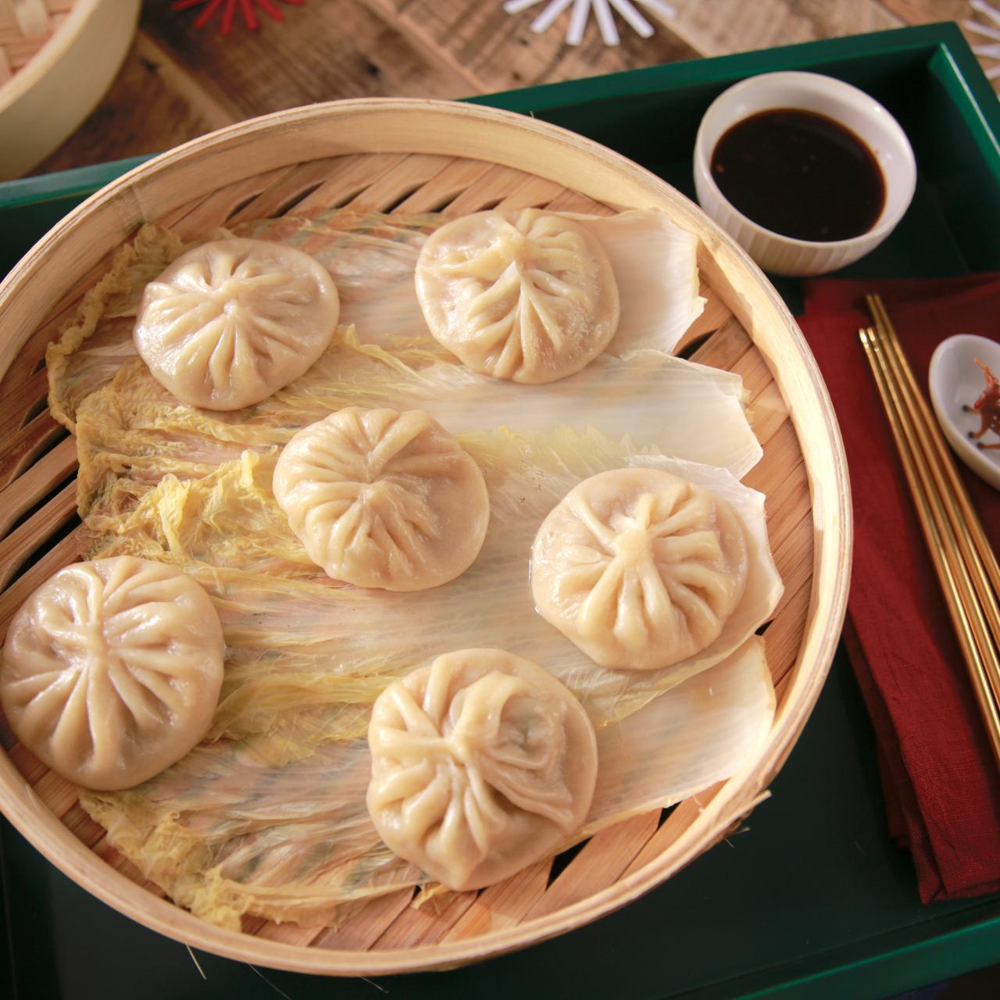

Dumplings

Description
Dumplings are delicious pockets of dough filled with savory or sweet ingredients.
They come in many varieties around the world, and can be boiled, steamed,
or fried for a delightful meal or snack.
Ingredients
For the Dough
- All-purpose flour
- Water
- Salt
For the Tofu Filling
- Tofu(extra-firm)
- Vegtables: Chopped carrots,cabbage,carrots,and mushrooms
- Seasonings: Soy sauce, seaseme oil, rice vinegar, and garlic
- Armoatics(Optional): minced garlic, scallions, and ginger
Addtional Ingredients
- Dumpling Wrapping Paper
- Oil(for frying pan)
Steps
- Prepare the Dough: In a large bowl, combine all-purpose flour and a pinch of salt (optional).
Gradually add warm water, mixing with a spoon or chopsticks until a shaggy dough forms.
Knead the dough for 5-7 minutes on a lightly floured surface until smooth and elastic.
Cover the dough with plastic wrap and let it rest for 30 minutes at room temperature
- Press the Tofu: While the dough rests, crumble or mash the extra-firm tofu.
Wrap the crumbled tofu in a clean dishcloth or paper towels and place a heavy
object on top to press out excess moisture for 15-20 minutes.
- Make the Filling : In a separate bowl, crumble the pressed tofu.
Add your chosen vegetables (chopped cabbage, carrots, scallions, etc.),
along with any additional aromatics like minced garlic or ginger. Season the mixture with soy sauce,
sesame oil, rice vinegar, and a touch of salt to taste. If using, whisk in a cornstarch slurry or beaten egg to bind the ingredients.
- Assemble the Dumplings: Lightly flour a work surface. Roll out the dough into a thin sheet,
about 1/16 inch thick. Use a round cookie cutter or a drinking glass to cut out dumpling wrappers.
Place a spoonful of filling in the center of each wrapper. Moisten the edges with water and fold the wrapper
in half to form a crescent shape. Pinch the edges to seal the dumpling, making sure there are no air pockets.
Repeat with remaining dough and filling.
- Cook the Dumplings:Heat a thin layer of oil in a pan over medium heat.
Add the dumplings and cook for 2-3 minutes, or until the bottoms are golden brown.
Add a splash of water to the pan, cover, and steam for another 3-4 minutes, or until cooked through.
- Serve and Enjoy: Serve your dumplings hot with your favorite dipping sauce, such as soy sauce, chili oil, or a vinegar-based sauce.